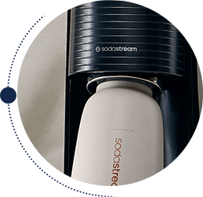
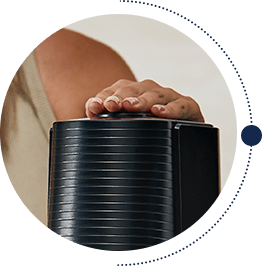

Butelka
termiczna do gazowania wody Miętowa, 0,9 l
Złap ulubione bąbelki do termicznej butelki i zabierz je ze sobą!
Czy znasz już butelkę, która nie tylko utrzymuje temperaturę napojów, ale też pozwala nagazować wodę? Poznaj SodaStream Fizz&Go – termiczną butelkę do gazowania, idealną dla osób aktywnych, podróżujących i tych, którzy stawiają czoła codziennym wyzwaniom. Dzięki niej możesz cieszyć się orzeźwiającą, gazowaną wodą zawsze, gdy masz na to ochotę – i to przyjemnie chłodną nawet przez 12 godzin!
To metalowa butelka termiczna, która łączy funkcjonalność i design, by stać się Twoim niezawodnym towarzyszem codziennych podróży.
Stylowy kolor:
urzekający, miętowy kolor, idealny dla miłośników kreatywności
subtelny beż
Pastelowa mięta
elegancki granat
Pastelowa mięta
subtelny beż

elegancki granat

Perfekcyjna świeżość bąbelków w dobrym stylu!
SodaStream Fizz&Go - Twój partner małej i dużej przygody
Zamiast wielu jednorazowych butelek wybierz innowacyjny bidon termiczny SodaStream Fizz&Go, który w sam raz zmieści się do plecaka, torby, a nawet uchwytu samochodowego. To stylowe i funkcjonalne rozwiązanie - idealne właśnie dla Ciebie, jeśli cenisz świeżość, dbałość o środowisko i wygodę.
Łatwo zakochać się w SodaStream Fizz&Go
Szczelna i wytrzymała, z półelastycznym paskiem silikonowym i uszczelką.
Wolna od BPA.
Łatwa w czyszczeniu, przeznaczona do mycia w zmywarce.
Wykonana ze stali nierdzewnej 18/8, odpornej na korozję i uderzenia.
Butelka termiczna do gazowania wody: pastelowa mięta
Zawsze miej przy sobie ulubiony napój - z metalową butelką SodaStream Fizz&Go to proste! Unikalna konstrukcja utrzymuje chłód do 12 godzin. Dodatkowo w bidonie podtrzymasz temperaturę ciepłych napojów*.
*UWAGA! Nie nasycaj gazem wody o temperaturze powyżej 45°C. Zachowaj szczegółną odporność podczas przechowywania gorących płynów w butelce i otwierania butelki zawierającej gorące płyny.
gazuj
miksuj
i w drogę

Termiczna
butelka do
gazowania
Krok 1
Wlej do butelki SodaStream Fizz&Go 0,9 l wodę i zamontuj w saturatorze.
Krok 2
Dostosuj poziom nagazowania do swoich preferencji naciskając kilka razy przycisk.
Krok 3

Jeśli masz ochotę na napój smakowy lub własną kompozycję, dodaj ulubiony syrop SodaStream.
Do jakich saturatorów pasują butelki termiczne do gazowania
SodaStream Fizz&Go?
Butelki termiczne do gazowania wody są kompatybilne z saturatorami
SodaStream Art, Terra, Duo i Ensō.
Co wybrać: kubek termiczny czy metalową butelkę?
Smukła konstrukcja, składana rqczka i odporne tworzywo - to wszystko
sprawia, że bidon SodaStream FizzśGo jest wielofunkcyjny! Dzięki
dodatkowym możliwościom, które oferuje z powodzeniem możesz używać
go zamiast kubka termicznego.
Czy SodaStream Fizz&Go nadaje się tylko do wody gazowanej?
Możliwości jest znacznie więcej! W termicznej butelce SodaStream
Fizz&Go możesz nagazować wodę, ale jest również przeznaczona do
przechowywania napojów bez gazu. Przechowasz w niej zarówno zimne
jak i ciepłe napoje, a później wygodnie umyjesz ją w zmywarce.
Funkcjonalność i stylowy design
Codzienne nawodnienie
Pojemna i wygodna butelka termiczna SodaStream Fizz&Go to Twój
kompan, który będzie z Tobą od rana do wieczora, cokolwiek
aktualnie robisz, dotrzyma Ci kroku.
Przyjemne orzeźwienie
Utrzymująca temperaturę napojów butelka SodaStream Fizz&Go to
Twoje wsparcie podczas treningów na siłowni i aktywności na
świeżym powietrzu.
Komfort w podróży
Odporna i szczelna butelka termiczna SodaStream Fizz&Go to Twój
towarzysz w trakcie każdego wyjazdu, idealny by włożyć go do
plecaka lub torby, możesz ją także wstawić do uchwytu
samochodowego.
Stylowy design
Miętowa butelka termiczna SodaStream Fizz&Go to przydatny i
modny gadżet, który pomaga wyrazić indywidualny styl.
Wyjątkowy upominek
Funkcjonalna i stylowa butelka termiczna SodaStream Fizz&Go to
oryginalny prezent dla bliskiej osoby.
Bąbelkowa przyjemność na wyciągnięcie ręki
Połącz świeżą wodę gazowaną z wybranym syropem SodaStream - miksuj, eksperymentuj i zaskakuj oryginalnymi smakami przygotowanych napojów.

Gazowane klasyki:
Czekają na Ciebie znane i lubiane smaki np. 7 Up, Lipton Ice Tea Green, Pepsi czy Mirinda

Owocowe lemoniady:
Masz do wyboru nie tylko klasyczną, cytrynową lemoniadę, lecz również inne owocowe syropy bez dodatku cukru.
Zaskakujące moktajle:
Wypróbuj bezalkoholowe bazy SodaStream Crafted, by stworzyć niebanalne drinki z alkoholem lub bez.